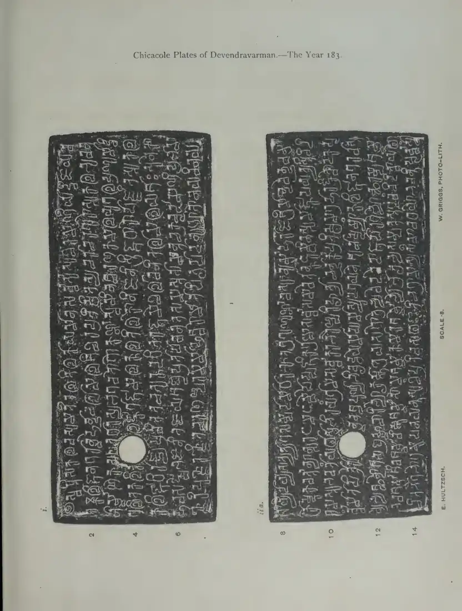
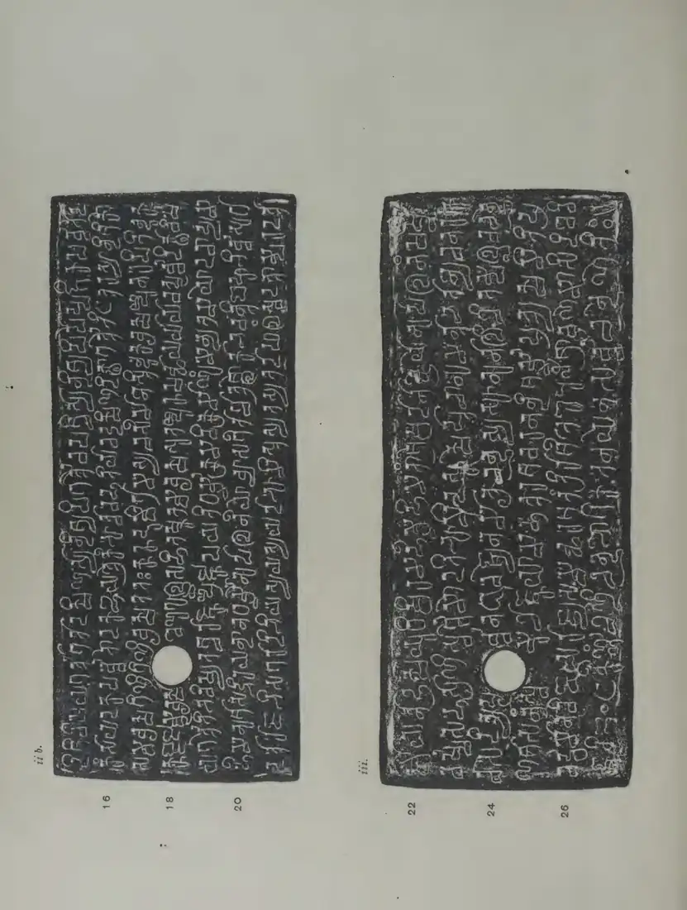

Chicacole plates of Guṇârṇava's son Dêvêndravarman
No. 21.— CHICACOLE PLATES OF GUNARNAVA'S SON DEVENDRAVARMAN.
By E. HULTZSCH, Ph.D.
These copper-plates were found at Chicacole in the office record room of the Principal Assistant Collector of Gañjám and kindly forwarded to me by Mr. C. J. Weir, I.C.S., Acting Collector of the Gañjám district. Mr. G. V. Ramamurti of Parlâ-Kimeđi informs me that he has no doubt that this set of plates is the missing one of the six sets which were dug up at Chicacole some years ago and purchased by Mr. Grahame.3 Like the five other sets, these plates are now deposited in the Madras Museum. They are three in number and measure 8 1/8 by 3 3/8 inches. The margins of both sides of the second plate, and those of the inner, inscribed side of the first and third plates are raised into rims for the protection of the writing, which is in a state of very good preservation. The ring on which the plates were strung, and which had not yet been cut when I received them, is about 7/8" thick and 4 3/4" in diameter. The small oval seal, in the lower part of which the ends of the ring are secured, measures about 1 1/8 by 1 1/4" in diameter. It bears, in relief, on a countersunk surface, a recumbent bull, which faces the proper right and is surmounted by a crescent. The weight of the three plates is 2 lb 2 oz., and that of the ring and seal 1 lb 2 1/2 oz.,— total 3 lb 4 1/2 oz.
The alphabet of the inscription resembles that of the Achyutapuram plates of Indravarman I.,4 with which,— unlike the two grants of Indravarman II.,5— it shares the Nágarí forms of and . In line 26 f. the inscription furnishes instances of the numerical symbols for 100, 80, 3, and 20, and, combined with the last, of the decimal figure for 0.6 The language is not very correct Sanskrit. With the exception of three imprecatory verses (ll. 20-24) and one verse which records the name of the writer (l. 24 f.), the inscription is in prose. As regards orthography,— the jihvámúlhya is employed once (in tak=Kalinga°, line 2), and the upadhmá-níya five times (in lines 7, 10, 17, 18, 19). The anusvára before ś is expressed by ñ in nistriñśa (l. 4), vañśyéna (l. 24), and viñśati (l. 26 f.). In accordance with Pânini, viii. 4, 47, the letter k is doubled before r (in dharmma-kkrama-vikkramáṇám, l. 19), and the letter t before y (e.g. in prattyaksham, l. 25, but not in satya-tyága, l. 8), and before r (e.g. in yattra, l. 16, but not in Krishnátréya-sagótra, l. 12). The erroneous doubling of t in Máttrichandra (l. 24) shows that the vowel ri was pronounced as ri, which is actually used for ri in kritvá (l. 10).
1 This appears to refer to the sluice of the tank.
2 This is perhaps the Telugu gárà-cheṭtu, ‘a bramble.’
3 Mr. Sewell's Lists of Antiquities, Vol. I. p. 7; Vol. II. p. 21 f.; and Ind. Ant. Vol. XIII. p. 48.
4 ante, p. 127.
5 Ind. Ant. Vol. XIII. p. 120 f. and p. 122 f.
6 In his Gupta Inscriptions, p. 292, note 2, Dr. Fleet notices two other cases of the combination of a decimal figure with a numerical symbol.
The plates record the grant of the village of Poppangika in Saraümaṭamba, a subdivision of the district of Krôshṭukavartanî (l. 9), as an agrahâra (l. 10) to six Brâhmana brothers, who resided at Kalingânagara (l. 11) and belonged to the Chhandôga school (l. 12). The grant was made at Kalinganagara1 (l. 2) by one of the kings of Kalinga (l. 5) of the Gânga family (l. 4),—the Mahârâja Dêvèndravarman, who was the son of Gunârnava (l. 8). The date of the grant was the eighth tithi of the bright fortnight of the month of Mâgha (l. 11), during (the sun's) progress to the north (udag-ayana).2 The edict itself was engrossed and issued in “the one-hundred-and-eighty-third year (in words and numerical symbols) of the reign, on the twentieth (solar) day (in words and figures) of the month of Śrâvaṇa” (l. 26 f.). This second date is subsequent to the first by at least several months. Unfortunately, neither of the two dates contains any elements which admit of verification, and which might thus help to fix the initial point of the Gânga era. The second date is preceded by the names of the writer of the edict and of an official witness (l. 24 f.), and followed by the name of the engraver (l. 27).
Owing to the uncertainty in which the Gânga era is still involved, nothing can at present be said about Dêvèndravarman, the son of Gunârnava, but that he must be distinct from Dêvèndravarman, the son of Anantavarman,3 and that the name Gunârnava occurs twice in the list of the ancestors of Chôdaganga of Kalinga.4
TEXT.5
First Plate.
- 1 ॐ6 स्व[स्ति] [॥*] सकलवसुमतीतलतिलकायमान[त्*] सर्व्वतुंसुखरमणीयाद्विजयव-
- 2 तङ्कलिङ्गनगरान्महेन्द्राचलामलशिखरप्रतिष्ठितस्य चराचरगुरोस्सकलभुवन-
- 3 निर्माणैकसूचधारस्य भगवतो 7गोकर्णस्वामिनश्चरणकमलयुगलप्रणामाद्वि-
- 4 गलितकलिकलङ्गो गाङ्गामलकुलतिलको 8निजनिस्त्रिङ्गधारोपार्जितस्सकल-9
- 5 कलिङ्गाधिराज्य[:*] 10प्रविततचतुरुदधितरङ्गमेखलावनितलामलयशा(:) अनेका-
- 6 हवसङ्कोभजनितजयशब्द[:*] प्रतापावनतसमस्तसामन्तचक्रचूडामणिप्रभाम-
- 7 स्त्ररोपुञ्जरस्त्रितचरण्७परममाहेश्वरो मातापितृपादानुध्यातो नयविनय-
1 The vowel of the third syllable is short here, as in the majority of other instances, while it is long in line 11, in the Chicacole plates of Anantavarman's son Dêvèndravarman (Ind. Ant. Vol. XIII. p. 275, text line 2), in the Alamanda plates (ante, p. 18, text line 2), and in the Parlâ-Kimedi plates of Vajrahasta, which will shortly be published by Professor Kielhorn (No. 31 below).
2 Compare the first date of the Achyutapuram plates, ante, p. 127. In the Chicacole plates, uda gayana cannot be taken in the sense of uttarâyaṇa-gamkrânti, because the latter cannot coincide with the eighth tithi of the bright fortnight of Mâgha.
3 Ind. Ant. Vol. XIII. p. 273, and Vol. XVIII. p. 146.
4 ibid. Vol. XVIII. p. 170 f.
5 From the original plates.
6 Expressed by a symbol in the original.
7 Read गीकर्ण.
8 Read निस्त्रिंश.
9 Read तसकल.
10 As in another Gânga grant (Ind. Ant. Vol. XIII. p. 121), the participle प्रवितत is erroneously placed at the beginning of the compound, while the sense requires it to stand between अवनितल and अमलयशा, as in two other grants (Ind. Ant. Vol. XVI. p. 134, and ante, p. 128).
Second Plate; First Side.
8 1शीर्योदार्यसत्यत्वागसम्पदामाधारभूत[:*] 2श्रीगुणार्णवसूनुर्महाराज[:*] श्रीमा-
न्देवेन्द्रवर्मा
9 क्रीष्टुकवर्तन्यान्सरउमटम्बे3 पीप्पङ्गिकयामे सर्वसमवेतान्कुटुम्बिनसमाज्ञापयत्यस्ति4
[॥*] विदि-
10 तमस्तु भवतां यथास्माभिरयं ग्राम[:*] सर्वकरभरै७परिहृत्याचन्द्राक्षेप्रतिष्ठम-
ग्रहारङ्गित्वोदकपू-5
11 र्वं मातापित्तोरान्मनश्च6 पुण्याभिवृद्धये माघमास्युदगयने 7शुचाष्टम्यां कलिङ्गा-
नगरवास्त-
12 व्येभ्यञ्छन्दोगसब्रह्मचारिभ्यो3 क्षणात्रेयसगोत्रेभ्य वेदवेदाङ्गपारगेभ्योच्छरम्पशर्म-
13 भवशर्मशिवशर्मविणुशर्मसोमशर्मकुमारशर्मेभ्यो9 भ्रातृभ्य[:*] सम्पत्तस्तदेवं10
विदित्वा यथो-
14 चितभागभोगमुपनयन्त[:*] सुखं प्रतिवसय इति11 [॥*] च12 ग्रामस्य सोमा-
वधयो भवन्ति [*] पूर्वस्यां
Second Plate; Second Side.
15 दिशि विषयगर्त्ता गता [*] दक्षिणस्यान्दिश्यपि गर्त्तैव [*] पश्चि[म*]-
स्यान्दिश्यपि पीप्पङ्गिकपर्वतोद-
16 कं सायदकपर्वतोदकञ्च यत्तैकीभूत्वा13 वहति यावहक्षिणदिक्या14 गर्त्तेति [*]
उत्तरस्यान्दिशि को-
17 सम्बवृक्षगिणिगिणिवृक्ष15 ततः कुरुडुम्बिग्रामस्य च सोमा 16नेस्तिन्दुकवृक्ष७-
पुनरपि तिन्दुक[:*]
18 कुबज(१)म्बूवृक्षवेणुगुल्मसहितष्कतम्बवृक्ष17 अत७पुरुषच्छायया यावत्पूर्वदिक्या18
विष-
19 यगर्त्तेति [॥*] भविष्यतश्च राज्ञ७प्रज्ञापयति [*] धर्मक्रमविक्रमाणांमन्य-19
तमयो[गा*]दवाप्य म-
1 Read शीर्योदार्य. 2 Read गुणार्णव.
3 Read वर्तन्यां सर. The ट of टम्बे is badly executed, but nevertheless certain.
4 Read ज्ञापयति. 5 Read हारं कृत्वी. 6 Read रात्मनश्च.
7 Read शुद्धा.
8 Read चारिभ्यः and गीत्रेभ्यो. 9 Read शर्मेभ्यो. 10 Read संप्रत्तः । तदेवं.
11 Read वसतेति.
12 Read षस्य. 13 Read भूय. 14 Read दिक्ष्या.
15 Read वृक्षौ.
16 Read वतस्तिन्दुक.
17 Read सहितः कदम्बवृक्षीतः. 18 Read दिक्ष्या.
19 Read माणामन्य.
Plate 1 is bound after this page.
Plate 2 is bound after this page.
20 हीमनुशासद्भिरयन्दानधर्मोनुपालनीयो व्यासगीताश्चात्त' श्लोका भवन्ति [1*]
बहुभिव्वंसुधा
21 दत्ता राजभि[:*] सगरादिभि[: 1*] यस्य यस्य यदा भूमिस्तस्य. तस्य
तदा फलं [॥*] सदत्ताम्परदत्ता-
Third Plate.
22 स्वा2 यत्नाद्रक्ष युधिष्ठिर [1*] महीम्महिमतां श्रेष्ठ दानाच्छेयोनुपालनं
[॥*] षष्टिं
23 वर्ष्पसहस्राणि स्वर्गे मोदति भूमिद[: 1*] आक्षेप्ता चानुमन्ता च ता-
न्येव नरके
24 व[से]दित्यपूर्वनटवङ्गेन3 मातृचन्द्रस्य सनुना [1*] लिखितम्पल्लवचन्द्रे-
25 ण शासनं स्वमुखान्नया [॥*] महत्तरश्वरनन्दिशर्मप्रत्यक्षमिति [1*] प्र-
26 वर्द्धमानविजयराज्यसम्बच्छरशतं4 चिराशीते5 १०० ८० ३ आवणे मासि
दिवे6 वि-
27 ङ्गति २० ० [1*] उत्कीर्णं खण्डिचन्द्रभोगिकतनयेन सर्वचन्द्रेणेति(:) ॥
TRANSLATION.
(Line 1.) Ôm. Hail! From the victorious (city of) Kalinganagara, which is the crnament of the whole earth (and) which is pleasant (on account of the simultaneous existence) of the comforts of all seasons,— the son of the glorious Guṇāṇava, the glorious Mahârája Dêvendravarman,— who has become a receptacle of wisdom, modesty, bravery, magnanimity, truthfulness, liberality, and wealth; who adores the feet of (his) mother and father; who is a devout worshipper of Mahêśvara; whose feet are reddened by the dense clusters of the light of the jewels on the crests of the crowd of all vassals, prostrated by (his) valour; who has caused the cry of “victory” to resound in the turmoil of many battles; whose spotless fame is spread over the surface of the earth which is girt by the waves of the four oceans; who has acquired the sovereignty over the whole (country) of Kalinga by the edge of his own sword; who is the ornament of the spotless race of the Gângas; (and) who is freed from the stains of the Kali (age) by (his) prostrations at the pair of lotus-feet of the god Gôkarṇasvâmin, who is the sole architect for the construction of the whole world, who is the lord of the animate and inanimate creation, (and) who is established on the sinless peak of the Mahêndra mountain,— addresses (the following) order to the ryots and all (other inhabitants) of the village of Poppaṅgika in Saraūmatāmba, (a subdivision of the district) of Krôshṭukavartanî :—
(L. 9.) “Be it known to you that we have given this village,— having exempted (it) from the burden of all taxes, having converted (it) into an agrahâra which is to last as long as the moon and the sun, with libations of water, for the increase of the religious merit of (our) mother and father and of ourselves, in the month of Mâgha, during (the sun’s) progress to the
1 The group श्लोका looks as if it consisted of ग and च.
2 Read दत्तां वा.
3 Read वसेदिति ॥ अपूर्वनटवंशेन मातृचन्द्रस्य.
4 Read संवसर.
5 Read श्रशीतिः.
6 Read दिने विंशे.
north (udag-ayana), on the eighth (tithi) of the bright (fortnight),— to the brothers Acchharampaśarman, Bhavaśarman, Śivaśarman, Vishnuśarman, Sômaśarman, and Kumāraśarman, who reside at Kalingānagara, who are students of the Chhandôga (sâkhâ), who are members of the Krishnâtrêya gôtra, (and) who have thoroughly studied the Vêdas and Vêdângas. Knowing this, dwell ye in peace, delivering (to the donees) the customary shares and enjoyments!”
(L. 14.) The boundary-limits of this village are (the following):— In the eastern direction lies the trench (which marks the boundary) of the district. In the southern direction, likewise a trench. In the western direction, a trench in which the water from the Poppangika hill and the water from the Sâyadaka hill unites and runs, (and) which extends as far as the southern direction. In the northern direction, a kosamba (?) tree and a ginigiñi (?) tree; then, the boundary of the village of Kuruđumbi; then, a tinduka tree; again, a tinduka (and) a kadamba tree, together with a crooked jambâ tree and a bamboo clump; (and) then, for (a distance which equals) the shadow of a man,1 the district trench,2 which extends as far as the eastern direction.
(L. 19.) And (the king) addresses (the following) request to future kings:— “Having obtained possession of the earth by means of right, or inheritance, or conquest, (and) ruling (it), (you) should preserve this meritorious gift; and, with reference to this (subject), there are (the following) verses composed by Vyâsa:—”
[Three of the customary verses.]
(L. 24.) (This) edict was written at the command of his (the king's) own mouth by Pallavachandra, the son of Mâtrichandra (and) a descendant of the race of Apûrvanata.
(L. 25.) (It was written) in the presence of the Mahattara, the Śavara3 Nandiśarman.
(L.. 26.) (In) the year one hundred and eighty-three,— (in figures), 100 80 3,— of the prosperous and victorious reign, in the month of Śrâvaṇa, on the twentieth,— (in figures), 20 0,— (solar) day.
(L. 27.) (This edict) was engraved by Sarvachandra, the son of Khaṇdichandra-Bhôgika.4
1 This description appears to presuppose the position of the sun at an angle of 45° over the horizon.
2 The same trench formed the boundary in the east; see line 14 f.
3 The Śavaras or Śabaras (Sauras) are the savage aborigines of the Gañjâm and Vizagapatam districts. A Śabara or Śavara chief Udayana is referred to in the Udayèndiram plates of Pallavamalla and in an inscription at Sirpur on the Mahânadi; see Dr. Fleet's Gupta Inscriptions, p. 293.
4 On the title bhôgika see Dr. Fleet's Gupta Inscriptions, p. 100, note 2.

